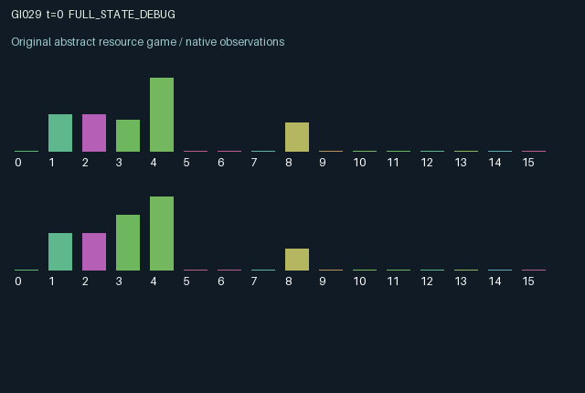

GI029 / LEGACY_ARRAY
astra-d2-00029: Consumable filtration with transported regeneration waste
2 agents5 actions16 observation columns32 original horizonRuntime: PASS
Release verification episode
Untrained uniform legal actions. Actual JAX state sampled along the full original episode; full-state debug camera. No human performance or learning claim.

Run this game
crucibles play --game 29
Start Python locally, then open the address printed by the terminal. Installation, multiplayer, takeover and keyboard controls →
Objective, rewards & ending
Exact task contract
{
"objective": "Accumulate original per-agent rewards under the interaction rules in mechanism.md.",
"natural_termination": "No early terminal; original t >= 32 horizon.",
"exact_transition_and_reward_source": "def raw_step(self, key, state, actions):\n admit = (actions == 0).astype(jnp.float32)\n incoming_volume = jnp.roll(state[\"pipe_volume\"], 1)\n incoming_dirt = jnp.roll(state[\"pipe_dirt\"], 1)\n total_volume = state[\"volume\"] + incoming_volume + admit\n total_dirt = state[\"dirt\"] + incoming_dirt + admit * state[\"inlet_dirt\"]\n fraction = jnp.clip(total_dirt / jnp.maximum(total_volume, 0.001), 0.0, 1.0)\n overflow = jnp.maximum(total_volume - 4.0, 0.0)\n volume = jnp.minimum(total_volume, 4.0)\n dirt = volume * fraction\n process = jnp.where(actions == 1, jnp.minimum(volume, 1.0), 0.0)\n forward = jnp.where(actions == 2, jnp.minimum(volume, 1.0), 0.0)\n filtered = jnp.where(actions == 3, jnp.minimum(dirt, state[\"capacity\"]), 0.0)\n regenerate = actions == 4\n wash_volume = (regenerate & (state[\"capacity\"] < 1.0)).astype(jnp.float32)\n wash_dirt = wash_volume * (1.0 - state[\"capacity\"])\n next_volume = jnp.maximum(volume - process - forward, 0.0)\n next_dirt = jnp.clip(dirt - fraction * (process + forward) - filtered, 0.0, next_volume)\n next_capacity = jnp.where(regenerate, 1.0, jnp.maximum(state[\"capacity\"] - filtered, 0.0))\n rewards = 0.8 * process * (1.0 - 2.0 * fraction) + 0.04 * forward\n rewards = rewards - 0.04 * admit - 0.03 * (actions == 3).astype(jnp.float32) - 0.05 * regenerate.astype(jnp.float32)\n rewards = jnp.clip(rewards - 0.10 * jnp.minimum(overflow, 1.0), -1.0, 1.0).astype(jnp.float32)\n next_state = {\n \"t\": state[\"t\"] + jnp.array(1, dtype=jnp.int32),\n \"volume\": next_volume.astype(jnp.float32),\n \"dirt\": next_dirt.astype(jnp.float32),\n \"capacity\": next_capacity.astype(jnp.float32),\n \"pipe_volume\": (forward + wash_volume).astype(jnp.float32),\n \"pipe_dirt\": (forward * fraction + wash_dirt).astype(jnp.float32),\n \"inlet_dirt\": state[\"inlet_dirt\"],\n \"throughput\": state[\"throughput\"] + process,\n \"overflow\": overflow.astype(jnp.float32),\n \"last_reward\": rewards,\n \"last_action\": actions.astype(jnp.int32),\n }\n done_all = next_state[\"t\"] >= 32\n dones = jnp.full((2,), done_all, dtype=jnp.bool_)\n info = {\"done_all\": done_all, \"legal_mask\": self.legal_actions(next_state)}\n return self.observe(next_state), next_state, rewards, dones, info"
}Declared per-step reward bounds: -1.0 to 1.0. Observability: source_defined.
Rules
Original mechanism document (historical status wording retained)
# astra-d2-00029: Consumable filtration with transported regeneration waste This initial parentless proposal uses generic flow processing, delayed externalities and filter-regeneration reasoning. It is not a claim of a new game class or nonisomorphism. No benchmark, other proposal, training result, development result or final-test data was supplied to this author. ## Transition mechanism and actions Each agent controls a four-unit vessel containing volume and contaminant mass, and a filter with one unit of initially unused capacity. Contaminant removed by filtration is stored implicitly as one minus remaining filter capacity. Each role also has one outgoing, one-transition transport compartment. Actions are 0 admit one unit from one's private inlet, 1 process up to one unit, 2 forward up to one unit to the partner, 3 remove as much vessel contaminant as the remaining filter can hold, and 4 regenerate the filter. All actions are legal even when ineffective. Incoming material from the partner's previously created compartment arrives before the current action is evaluated. All vessel material is mixed; overflow beyond four units discards volume and contaminant in the same proportion. Forwarding transports the current mixture. Regeneration restores filter capacity to one and, when the filter contains any stored contaminant, sends one unit of externally supplied carrier water containing that stored contaminant to the partner. This carrier water is an explicit exogenous resource rather than a conserved part of the regenerating vessel. The outgoing compartment arrives on the next raw step. The partner can consequently be harmed by a regeneration action that locally restores useful filtering capacity. The partner can also benefit from clean forwarded material. Processing and forwarding remove contaminant in the mixture proportion. Filtration removes contaminant without removing volume. Each role selects one action, so processing, forwarding, filtration and regeneration do not occur simultaneously within a role. ## Information and delayed interaction A role sees its own contamination, filter capacity, inlet quality and outbound mixture. Vessel volumes, throughputs, overflows and the preceding actions of both roles are public. The next inbound volume is visible, but the partner's contaminant load and filter capacity are not directly observed. Incoming quality becomes part of the local mixture after arrival. The sixteen columns are: time/32; own and partner vessel volume/4; own vessel contaminant fraction; own remaining filter capacity; own outbound volume; own outbound contaminant fraction; next inbound volume; own inlet contaminant fraction; own last reward; own and partner previous overflow/2; own and partner cumulative processed volume/32; own and partner previous action/4. Zero-volume fractions use a positive denominator floor and are zero. Both agents alter their own future processing opportunities and can alter the other's future mixture through forwarding or filter waste. Incoming material can also induce overflow, so the externality depends on the receiver's state rather than solely on a sender action label. ## Incentives and reward bounds Processing yields 0.8 times processed volume times one minus twice the contaminant fraction: clean processing is valuable and sufficiently dirty processing is costly. Forwarding earns a small 0.04 reward per unit, admitting costs 0.04, filtering costs 0.03 even if ineffective, and regeneration costs 0.05. Overflow costs 0.10 times the smaller of overflow and one. This permits conflict between locally beneficial disposal and the partner's throughput. A processed quantity is at most one and contaminant fraction lies in [0, 1]. Even summing mutually exclusive action costs, total negative magnitude is at most 1.02, so the explicit [-1, 1] clip is the authoritative reward bound. Under the intended mutually exclusive action semantics, a processing transition ranges from -0.9 to 0.8; the other actions are more tightly bounded. Clipping is a declared saturation rule, not an unreported normalization. No terminal inventory bonus is added. ## Interface and evidence status The source intends the required A2/O16/U5 interface, 32 transitions, all-legal masks and preserved terminal state. Reset samples initial dirt and private inlet quality through the supplied random key. Later transitions are deterministic and do not use the step key. No candidate execution, JAX initialization, compiler invocation, isolated validation, duplicate review, mechanism qualification or learning measurement has occurred in the author's process. Syntax parsing alone is not validation. Model backend revision and token telemetry remain unknown.
Commands
0Admit fluid
1Process fluid
2Forward fluid
3Filter dirt
4Regenerate filter
Roles & abilities
agent_0 Original legacy agent; see mechanism and source
agent_1 Original legacy agent; see mechanism and source
Observation permissions
Training receives only the original observation rows. Role cameras use declared visibility; debug cameras are explicitly marked. Local benchmark records log debug exposure and role takeover history.
Exact observation layout
[
{
"slice": [
0,
16
],
"visibility": "exact original observe() below",
"source_code": "def observe(self, state):\n obs = jnp.zeros((2, 16), dtype=jnp.float32)\n obs = obs.at[:, 0].set(state[\"t\"] / 32.0)\n obs = obs.at[:, 1].set(state[\"volume\"] / 4.0)\n obs = obs.at[:, 2].set(jnp.roll(state[\"volume\"], 1) / 4.0)\n obs = obs.at[:, 3].set(state[\"dirt\"] / jnp.maximum(state[\"volume\"], 0.001))\n obs = obs.at[:, 4].set(state[\"capacity\"])\n obs = obs.at[:, 5].set(state[\"pipe_volume\"])\n obs = obs.at[:, 6].set(state[\"pipe_dirt\"] / jnp.maximum(state[\"pipe_volume\"], 0.001))\n obs = obs.at[:, 7].set(jnp.roll(state[\"pipe_volume\"], 1))\n obs = obs.at[:, 8].set(state[\"inlet_dirt\"])\n obs = obs.at[:, 9].set(state[\"last_reward\"])\n obs = obs.at[:, 10].set(state[\"overflow\"] / 2.0)\n obs = obs.at[:, 11].set(jnp.roll(state[\"overflow\"], 1) / 2.0)\n obs = obs.at[:, 12].set(state[\"throughput\"] / 32.0)\n obs = obs.at[:, 13].set(jnp.roll(state[\"throughput\"], 1) / 32.0)\n obs = obs.at[:, 14].set(state[\"last_action\"] / 4.0)\n obs = obs.at[:, 15].set(jnp.roll(state[\"last_action\"], 1) / 4.0)\n return obs"
}
]Entity visibility & attributes
[]
Actual verification & provenance
Per-game execution receipt
{
"game": "gi029",
"status": "PASS",
"verification_revision": 2,
"source_sha256": "b2ae5dd67e937dc44a23ee49fafdf2ffa4c97aa2a4706880b6aa391353cfa813",
"seed": 20261101,
"runtime": {
"jax": "0.4.38",
"numpy": "1.26.4",
"devices": [
"TFRT_CPU_0"
]
},
"dimensions": {
"num_agents": 2,
"observation_size": 16,
"num_actions": 5,
"max_steps": 32
},
"checks": {
"eager_reset": {
"status": "PASS",
"seconds": 0.6540653705596924
},
"observation_spaces_legal_masks": {
"status": "PASS",
"seconds": 0.14927244186401367
},
"eager_step": {
"status": "PASS",
"seconds": 0.48120999336242676
},
"jit_reset": {
"status": "PASS",
"seconds": 0.28645825386047363
},
"jit_step": {
"status": "PASS",
"seconds": 0.4124181270599365
},
"eager_jit_integer_parity_float_measurement": {
"status": "PASS",
"seconds": 0.000591278076171875
},
"jit_vmap_reset": {
"status": "PASS",
"seconds": 0.3493509292602539
},
"jit_vmap_step": {
"status": "PASS",
"seconds": 0.5076262950897217
},
"outer_autoreset_api": {
"status": "PASS",
"seconds": 0.5490694046020508
},
"full_original_horizon_episode_and_render": {
"status": "PASS",
"seconds": 1.203148365020752
}
},
"human_scores": null,
"browser_controls": "PENDING",
"failures": [],
"elapsed_seconds": 5.334123134613037,
"float_parity_max_abs": 0.0,
"numerical_parity": "EXACT",
"raw_terminal_absorbing": "NOT_PART_OF_ORIGINAL_LEGACY_CONTRACT",
"terminal_outer_reset": "PASS",
"episode_steps": 32,
"scripted_random_returns": [
0.13613844034262002,
0.4525651652365923
],
"terminal": true,
"demo_information": "FULL_STATE_DEBUG",
"demo_frames": 33,
"render_roles_checked": 2
}Chromium control verification
{
"game": "gi029",
"status": "PASS",
"human_scores": null,
"engineering": true,
"checks": [
"catalog_selected_and_real_native_reset",
"dom_queue_and_native_step",
"second_participant_ownership_and_native_joint_step",
"all_roles_individually_controllable_no_role_cap",
"explicit_debug_camera",
"release_to_pure_ai_without_reset",
"close_session_preserves_log"
],
"ui_sha256": "96243f9de144b80b5e20a114330e2206bdcd58d3efc9c6f13bbc08b95cacc14d",
"keyboard": "NO_LEGAL_CARDINAL_COMMAND_FOR_ROLE0_AT_RESET",
"seconds": 4.0904552936553955
}Original identity and file hashes
{
"id": 29,
"key": "gi029",
"title": "astra-d2-00029: Consumable filtration with transported regeneration waste",
"summary": "",
"tags": [],
"family": "legacy_array",
"dimensions": {
"num_agents": 2,
"observation_size": 16,
"num_actions": 5,
"max_steps": 32
},
"source_sha256": "b2ae5dd67e937dc44a23ee49fafdf2ffa4c97aa2a4706880b6aa391353cfa813",
"manifest_sha256": "838d909e4ec3d4410c98e7b84131bf4d974a811109bb8ae73564e917502dcd6f",
"files": [
{
"file": "candidate.py",
"sha256": "b2ae5dd67e937dc44a23ee49fafdf2ffa4c97aa2a4706880b6aa391353cfa813",
"bytes": 4725,
"origin": "work/exp_2/astra_generation/discovery_v2/initial/candidate_00029/attempt_00/candidate.py"
},
{
"file": "mechanism.md",
"sha256": "3a804e7e9bdf1e4a452eb6ee5b251c8e703512a680fc7b9baedabc19c883eabd",
"bytes": 4743,
"origin": "work/exp_2/astra_generation/discovery_v2/initial/candidate_00029/attempt_00/mechanism.md"
}
],
"original_status": "LEGACY_SOURCE",
"original_saved_replay": false,
"release_validation": "PASS",
"human_scores": null,
"browser_validation": "PASS"
}